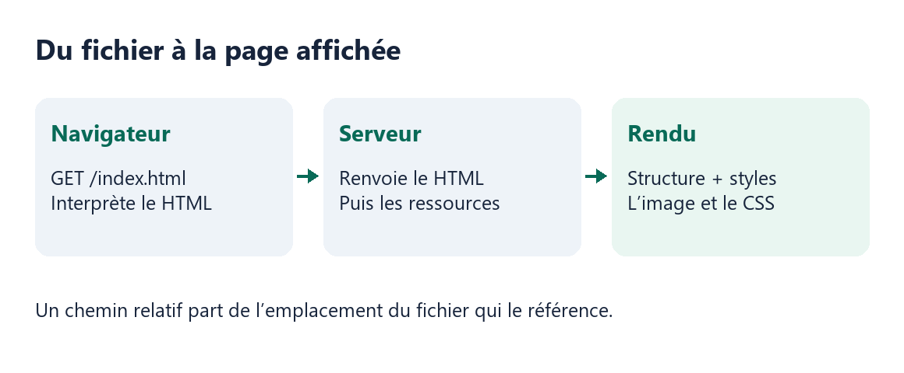

Comprendre le cours
Ce qui se passe quand tu ouvres une page
Le navigateur envoie une requête HTTP avec une méthode, une cible et des en-têtes. Un document local ouvert directement sur le disque peut servir pour tester le rendu sans passer par un serveur.
Les chemins images/photo.jpg et ../images/photo.jpg partent respectivement du dossier du document et de son dossier parent. En production, la casse des noms compte souvent.

Construire un document HTML lisible
Déclare <!doctype html> puis <html lang="fr">. Dans <head>, ajoute <meta charset="utf-8">, une balise viewport et <title>. Dans <body>, utilise <nav> pour les liens, <main> pour le contenu et des titres cohérents.
Une image informative mérite un texte alternatif utile. Si le texte voisin présente déjà la même information et que l’image est décorative, le texte alternatif peut être vide. Pour un champ de formulaire, relie <label for="email"> à l’élément qui porte id="email".
Sélecteurs, boîte CSS et lecture sur mobile
Une règle .carte { padding: 1rem; } s’applique aux éléments avec class="carte". En cas de conflit entre deux règles de même origine et même priorité, compare leur spécificité puis leur ordre. L’inspecteur du navigateur montre quelles déclarations sont barrées.
box-sizing: border-box fait entrer la bordure et le padding dans la largeur déclarée. Pour aligner des éléments, Flexbox est utile sur un axe et Grid sur deux. Prévois un retour à la ligne avec flex-wrap: wrap et vérifie la taille des images.
Pourquoi un lien fonctionne-t-il depuis l’accueil mais casse-t-il sur une sous-page ?
Imagine index.html à la racine, projets/reseau.html et images/schema.png. Depuis l’accueil, images/schema.png désigne le bon fichier. Depuis la page réseau, le navigateur cherche ce même texte à partir du dossier projets et tente projets/images/schema.png.
Écris ../images/schema.png dans la sous-page pour remonter d’un dossier. Vérifie l’adresse réellement demandée dans l’onglet Réseau du navigateur. C’est aussi une manière de comprendre pourquoi une feuille de style peut manquer sur une seule page.
Sigles et acronymes
- CSS · Cascading Style Sheets
- Feuilles de style d’une page Web.
Exemple. Une règle CSS peut mettre un titre en bleu et espacer les paragraphes. - HTML · HyperText Markup Language
- Langage de balisage d’une page Web.
Exemple. Une balise de titre structure un chapitre de la page. - HTTP · HyperText Transfer Protocol
- Protocole de requêtes et réponses du Web.
Exemple. Le navigateur demande une page et le serveur renvoie son contenu et un statut. - HTTPS · HyperText Transfer Protocol Secure
- HTTP protégé par TLS.
Exemple. Une page de connexion HTTPS protège les données échangées avec le serveur. - PHP · PHP: Hypertext Preprocessor
- Langage exécuté côté serveur.
Exemple. Le serveur utilise PHP pour lire un formulaire puis produire la réponse. - URL · Uniform Resource Locator
- Adresse qui indique où trouver une ressource.
Exemple. Une URL HTTPS indique notamment le serveur et le chemin d’une page.
Du cours aux TD et TP
Le sujet retrouvé dans le dossier Web S1 est un travail PHP déjà couvert en Développement Web S2. Les exercices HTML/CSS ci-dessous sont des compléments. Le mini-site local de la SAÉ 1.04 donne un exemple de navigation et de feuille de style partagée.
Questions TD & TP
Relier deux pages et réutiliser la même feuille CSS
Exemple d’entraînement. Créer deux pages et une feuille de style commune. Vérifier que la navigation fonctionne à partir de chaque page.
- Place
index.html,experiences.htmletmain.cssdans le même dossier. Dans les en-têtes, ajoute<link rel="stylesheet" href="main.css">. - Ajoute des liens relatifs entre les deux pages. Ouvre le site et navigue dans les deux sens.
- Applique une règle par classe et change une propriété dans la feuille commune pour vérifier l’effet sur les deux documents.
Diagnostiquer une page trop large sur téléphone
Exemple d’entraînement. Une image de 800 px et plusieurs cartes débordent dans une fenêtre de 390 px. Trouver la cause et corriger la mise en page.
- Vérifie la déclaration viewport. Inspecte les largeurs calculées et repère la première boîte qui dépasse.
- Donne à l’image
max-width: 100%; height: autoet retire la largeur fixe inutile de son conteneur. Fais revenir les cartes à la ligne avec Flexbox ou une grille adaptée. - Refais le test à 390 px puis sur un grand écran. Vérifie aussi que Tab permet d’atteindre les liens dans un ordre logique.